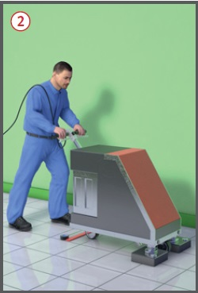
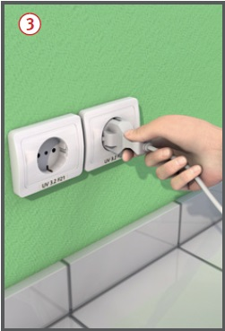

Reinigungsmaschinen |


| Staub beseitigende Maschinen, Einteilung nach Staubklassen | ||
| Staubklasse | Eignung für Stäube mit Expositionsgrenzwerten | Durchlassgrad Max. (%) |
| leicht light leger |
> 1 mg/m3 | 1 |
| mittel medium moyen |
> 0,1 mg/m3 | 0,1 |
| hoch high haut |
Alle (inkl. krebserzeugende Stäube und Stäube mit Krankheitserregern) | 0,005 |
07/2021